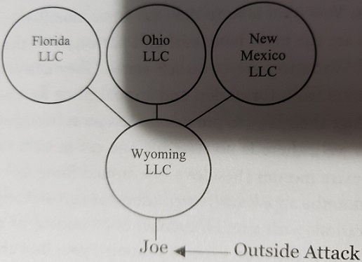
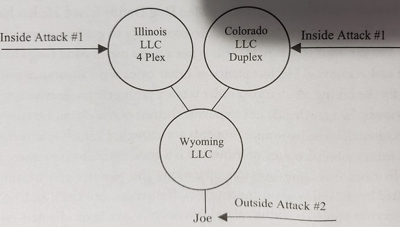
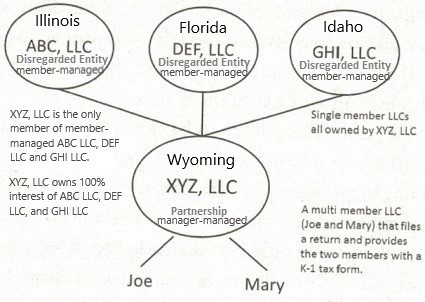

Wyoming has no state taxes. Wyoming relies om mining royalties to fund their budget. Plus, there are only 600,000 or so self-reliant citizens in Wyoming so the state does not have that much to fund. As a result, the annual fee for Wyoming entities are very low. Both corporations and LLC’s are only $50 a year to maintain in Wyoming. There are no state tax forms to fill out.
In Wyoming, the LLC can choose to be taxed in one of three ways – as a sole proprietorship, a partnership or a corporation. If the entity holder chooses either of the first two options, they will not pay business taxes on their profits.
So knowing that the extra cost is not significant, the question becomes: "How can I use Wyoming entity to my Benefit?". Let’s look at several ways.
An important asset protection strategy is to keep a low profile. By using nominee officers, directors, managers and general partners you may initially defer a potential plaintiff from even defining you as a high net-worth individual. If name search on the Internet shows you to be president, manager or general partner of one or more entities, and a further search indicates that entities have value, you are exposed. Instead, by using nominees - persons other than yourself - to be publicly listed as manager, officer and director, general partner or the like, your name is kept off the public record and the internet, to your low profile advantage.
Know that Wyoming does not list the managers or members of an LLC on the internet. In this case, you may not even need a nominee since your name is not publicly listed to begin with.
But the main feature of asset protection comes not from stealth (nominees) but from structure (the constructive use of strong entities).
The charging order is a court ordered lien on distributions. The charging order procedure is a unique part of the asset protection offered by LPs and LLCs. In certain states, a judgment creditor — one who has sued and obtained a court judgment against the judgment debtor — may only obtain a charging order against an LP, LLC, or Nevada corporation. This means that a creditor does not get title to the property owned by the LP, LLC, or Nevada corporation, but rather only a lien on (or the right to receive) the owner’s distributions.
The charging order is a creature of statute, fleshed out and brought to life by various court cases dealing with it. Some states have stronger laws than others, which is why it is important to choose the right state when forming a limited partnership or limited liability company.
The state laws of Nevada and Wyoming provide that the only remedy a creditor may pursue is the charging order. Combined with their tax-free status, Nevada and Wyoming are popular states for asset protection strategies.
The charging order, when so ordered by a court, charges the LLC to divert payments from debtor/member to the creditor. What if no distributions are made. The judgment creditor must wait to get paid.
So, if John owns a 25% limited partnership interest in XYZ, LP and John owes money to Mary after losing to her, in court, Mary can seek a charging order to receive John’s 25% share in the distributions from XYZ, LP. Of course, John’s partners are not keen as to this but any disruption is minimized with the charging order Mary does not step into John’s shoes as a substituted partner. She can’t vote and tell them how to run the business Instead, she is only assigned the distributions that would have been made to John.
General Partners of LPs favor the charging order because Mary does not have the power to demand a distribution be made. Yes the charging order allows her to receive John’s distribution. But she has no ability to control whether such a distribution will ever come (the same scenario applies under LLC law). And so the waiting game begins, whereby John does not receive any distributions and, in turn, standing in John’s shoes with the charging order, neither does Mary. Both may want and/or, really need the money, but with a cooperative general-partner or manager directing the monies elsewhere (improvements, repairs, expansions, and the like) no one gets anything.
What is Mary’s next step? She needs to know if that charging order is the exclusive remedy in the state in question or not. She has to know if there is some other way to collect from John without sitting around and waiting.
In California, courts have found that the charging order is not the only remedy. In the Crocker case the court noted "cases requiring creditors to obtain charging orders also indicate that the sale of a partnership interest is permissible where the creditor had first obtained a charging order and has demonstrated that monies are insignificant to satisfy the judgment" (Crocker National Bank vs. Perroton, 208 Cal. App 3d at 8). In Crocker, the judgment creditor was able to attach and sell the partnership interest.
This is not effective protection and is why California residents and investors are better off using Nevada and Wyoming LLCs and LPs. But again, the planning and structures are ever changing due to California’s voracious need for more government revenue.
What about other states?
In New York, courts have ruled that the charging order is not the exclusive remedy and have allowed the levy and sale of charged interests. Again, this is not what you want.
Some promoters on the internet tout the protective benefits of Utah LLCs. It is clear that these people have not bothered to read the Utah law. Specifically, Section 48-3a-503 (3) of the Utah Code states: "Upon a showing that distributions under a charging order will not pay the judgment debt within a reasonable time, the court may foreclose the lien and order the sale of the transferable interest."
This means, that if the judgment creditor can convince a judge that they won’t be paid quickly enough the judge can order the sale of the member’s interest. Utah is most definitely a weak state.
Some states allow the remedy of appointing a receiver. When a court - appoints a receiver, an independent third party to go into a business, all sorts of problems can arise. First, the receiver is entitled to payment for their services, and can drain a business quickly. In certain settings, judges appoint their friends to the lucrative receiver jobs and, accordingly, objective oversight is out the window. Receivers are given broad powers to make decisions for the business, which decisions frequently are not in the long-term interests of that business. So, while the appointment of a receiver is a significant blow to the debtor, due to the potential for receiver mismanagement, it can also be a detriment to the creditor seeking collection.
The list of weak states (as of this writing) is as follows:
These jurisdictions are less desirable because their state laws specifically permit a credit to foreclose on an LLC. If the charging order (the lien on distributions) does not satisfy the creditor in a reasonable period of time. They can get a court order forcing a sale of the LLC interests. Know that states are changing these laws frequently, so consult with your advisors for the most current laws.
The strong states which do not permit a foreclosure of LLC interest are (as of this writing):
In these states, the charging order is the exclusive remedy. If the lien on distributions doesn’t pay the creditor back quickly enough, that is too bad for the creditor. They can’t go back to court and try to foreclose on the LLC interest.
So, in terms of asset protection, you do not want a state law which allows for the appointment of a receiver and a judicial sale of your interest.
Long term, you want a state committed to maintaining protections for investors. You want a state that has an economic incentive to ensure that its laws are the most beneficial and protective in the entire country. Nevada and Wyoming are two such states. They derive a large amount of state revenue from, formation and annual filing fees, and thus are not likely to change their laws to provide for less protection (and thus less state revenue). As well, there is no state income tax in either state, so you are not paying extra monies (besides a low annual filing fee) for the benefits received. It must be noted that Nevada now has a gross receipts tax for LLCs and Corporations with annual revenues of $4 million or more within the state of Nevada. If this is an issue, Wyoming is your best choice. Finally, by state statute in both Nevada and Wyoming the exclusive creditor remedy is the charging order, even for single member LLCs. This is the shield you want for your asset protection defenses.
So, when investing across America, you will use a home state LLC for where the property is located. And all these will be owned by a Wyoming or Nevada, LLC, which each provide excellent protection against outside attacks.
Let’s consider such a holding structure. Three out of state LLCs are held by a Wyoming LLC.

If you are sued individually in an outside attack, Wyoming or Nevada LLC law will protect you much better than the other states’ laws. If you had used a California formed LLC, as we have seen, a court could order the sale of your membership interest to satisfy a creditor. By using a Wyoming (or Nevada) LLC, the creditor must wait to be paid. This is not good for the creditor and their contingency fee attorney. Which makes it good for you.
Another example, assuming Joe owns a fourplex in Illinois and a duplex in Colorado, those properties are protected by an Illinois and colorado LLC, respectively. On an inside attack against Illinois they can reach the equity of the Illinois fourplex but have no claim against the Colorado duplex or against the Wyoming LLC for that matter.

In the outside attack against Joe an attacker must fight though Wyoming to pursue anything from Illinois and Colorado. And the Wyoming charging order tells the attacker to wait to be paid from the Wyoming distributions which may never come. Do Colorado and Illinois have to distribute money to Wyoming? No. Could Illinois pay Joe’s son for doing work on the Illinois fourplex? Perhaps. Are you seeing where this is headed?
Also, if you were the direct owner of the Illinois LLC and the Colorado LLC, and didn't have Wyoming LLC and you got sued and had charging order on Illinois and Colorado LLC, then would not be able to transfer assets from Illinois LLC to Colorado LLC. You would have to make distribution from Illinois LLC to yourself first then make contribution to Colorado LLC and in making that distribution you would have to also pay creditor. Let's say you have a lot of money in the Illinois LLC and Colorado LLC needed cash and you wanted money transferred from Illinois LLC to Colorado LLC. You can not transfer money from Illinois LLC directly to Colorado LLC, because that's commingling, you're ignoring the form of these companies. You would have to take out distribution from Illinois LLC and then make contribution to the Colorado LLC, but you cannot do that because a creditor has a charging order on your LLC and they will step in and take that money from you. So, you've essentially tied yourself up by holding Illinois LLC and Colorado LLC in your own name. However, if you use Wyoming Holding LLC, then you've created flexibility so the charging order would only be attached to the distributions from Wyoming LLC. So, any money coming out to you from Wyoming LLC would be subject to attachment by your creditors but you're no going to take money out because you don't want it to go to your creditors. And in the exact same situation where you need to transfer money from Illinois LLC to Colorado LLC, you would transfer money from Illinois LLC to Wyoming LLC and from Wyoming LLC to Colorado LLC. And these transfers your creditors cannot touch because that Wyoming LLC serves as a blocker, often called a blocker entity, it protects distributions from Illinois LLC and from Colorado LLC from your creditors.
Charging order expires after seven years, to continue charging order after it expires creditor will have file for it again. And for you, when charging order expires and before new one gets filed, create a new Wyoming holding LLC and transfer everything from the old Wyoming holding LLC that had charging order filed against to the new Wyoming holding LLC. However, keep that old Wyoming LLC for creditor to continue filing charging order against it and not your new Wyoming LLC that creditor does not know about. And now from new Wyoming LLC you can take distributions because there is no charging order against it.
Best Wyoming entity structure:

Each disregarded entity owns only one multifamily property.
How do I create Wyoming LLC myself?
What interest rights does a creditor have with a charging order?
The creditor has the rights of an assignee of a partnership interest. Such an assignee does not have the ability to force a general partner or
manger to make a distribution. An assignee may only receive a distribution that the previous interest holder would have received.
Can charging order protection be lost?
Yes, by placing assets into an LLC/LP in advance of or during litigation, a fraudulent conveyance may occur. In such cases, a creditor may reach
the property by having the transfer voided or by attaching the transferred property.
Can a Buy-Sell Agreement be used to require the purchase of a charged interest?
Yes. A well-drafted agreement can require that a debtor partner/member sell their interest to the remaining interest-holders or the entity, thus
avoiding the issue of an assignee’s involvement.